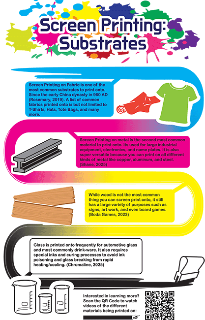

Infographic:
The infographic project was my favorite project of all. I've made many infographics before so I felt like I already had a shoe in for this project. I picked my topic easily because I love to screen print. The rest came easily. I knew I wanted to use CMYK for the colors because those are the proccess colors you use in screen printing. I went with an easy timeline like outline for the orginization of the project. I even added a QR code to a playlist I made of examples of what I talk about within the Infographic
